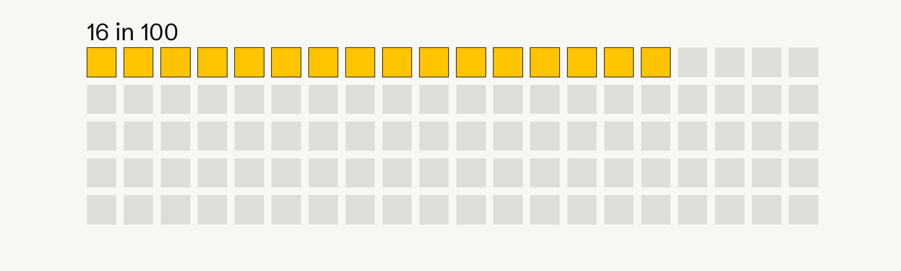
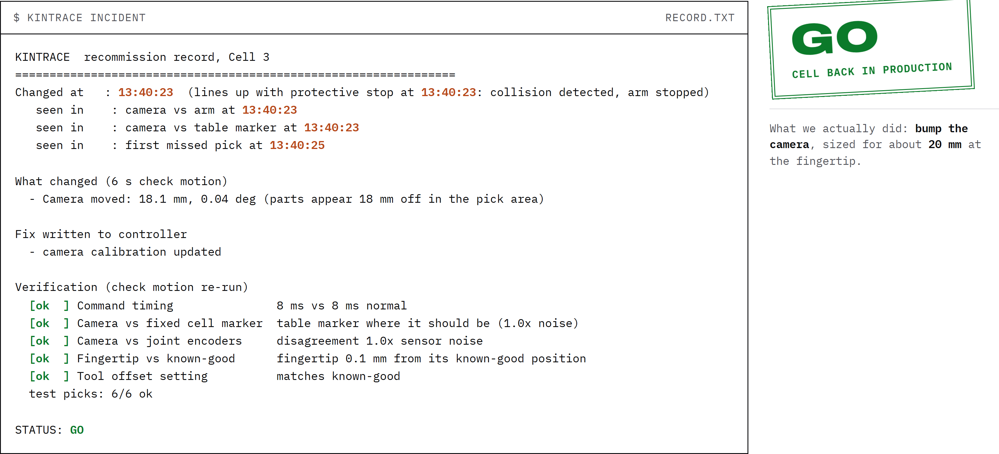
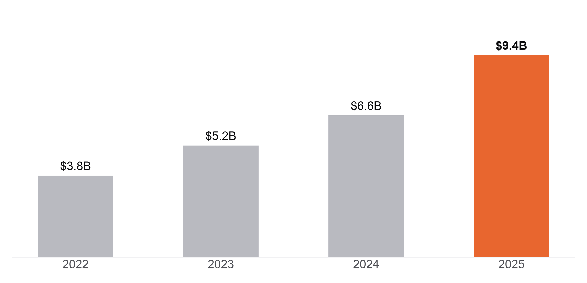

Kintrace
Robots get knocked out of place and nobody notices. Kintrace finds what moved and puts it back.
At 1:40 a cart clips a camera. Nobody finds out until 2:10.
Today
1:40
A cart clips the camera mount. Nothing alarms.
1:40 on
The robot keeps working. Every grab is now a centimetre off.
2:10
Grabs start missing. The line stops.
Hours later
A technician arrives and checks each possible cause by hand.
With Kintrace
1:40:23
Flagged. The camera moved 18 mm.
1:40:29
A 6 second check motion confirms nothing else moved.
1:41
The new camera calibration is written to the controller.
1:43
Six test grabs, all good. Signed off, back in production.
An illustration. The 18 mm and the timings are printed by the tool, running on our simulator. No cell like this exists yet.
You pay for it twice: in ruined training data, and in stopped lines.

Robot training data
An open audit of 4,959 recorded episodes flagged 15.6% of them for exclusion, and another half for review.
$2.3M
an hour
Up to, for an idle production line at a big car plant. Across the 500 largest manufacturers, unplanned downtime of every kind costs $1.4 trillion a year, about 11% of revenue.
Episode audit: an open source tool run over 12 public datasets, dev.to, 2026. Downtime: Siemens, The True Cost of Downtime 2024. Both linked in pitch/SOURCES.md.
Everything on the market tells you something is wrong, not what moved.
Monitoring dashboards
Ember, Foxglove, Formant
They watch the software and the logs. They will tell you a cell is slow or a run failed. They do not measure where the camera is, so they cannot name the physical cause.
Calibration hardware
Dynalog, CAPTRON, Renishaw
These do measure, and they are accurate. But you bolt a device into every cell you want covered, and each one mostly does the tool.
A technician
How it is actually done
Someone drives out and rules out each cause by hand, one at a time, with the cell down while they do it. It works. It costs hours.
We have not found anyone doing all of it from software alone: when it changed, what moved, by how much, and the fix written back.
What each of these does is taken from their own sites and materials. Listed in pitch/SOURCES.md.
Kintrace reads the robot's own logs, then says what moved and writes the fix.

Notices
It finds the moment things changed and lines it up with the protective stop.
Explains
It names the cause and sizes it. Here: the camera, 18.1 mm.
Fixes
It writes the new calibration, re-checks, runs six test grabs, then signs GO or NO-GO.
A real run of the tool, on our simulated cell. Try it yourself at the link on the last slide.
In our simulator, Kintrace named the right cause every time. The dashboard baseline we wrote got 69%.
120 runs on our simulated UR5e pick cell, 20 per case, every fault sized to cause the same 20 mm miss. The baseline is ours, built from the signals a typical dashboard tracks. Never run on a real arm.
It also catches slow drift, about 55 seconds before the first grab misses.
One simulated run of a sagging camera mount. Across 20 drifts it warned before the first miss 19 times, named the cause right 20 times, and raised 0 false alarms in 230 healthy windows. Drift is sped up so a run takes minutes. We have not measured lead time at real-world drift rates.
There have never been more robots, and the money behind them doubled in three years.

5 million
industrial robots now operating, a record, up 9% in a year. The US installed 38,500 and passed Japan. IFR, September 2026.
47% a year
forecast growth for physical AI, from $0.89B in 2025 to $15.2B by 2032. Every robot in it learns from recordings.
IFR World Robotics 2026. MarketsandMarkets, physical AI. Venture figures from Robotics Center, State of Robotics 2026. Links in pitch/SOURCES.md.
At $200 a robot a month, the part we can realistically sell to is $1.2B a year.
Top down check: $22.5B was spent on industrial robot services in 2023, heading to $41.6B by 2033. Our $12B bottom up number sits inside a services market that is already twice its size.
Robot count: IFR World Robotics 2026. Services market: Market.us, October 2024. The 10% camera share is our own estimate; we looked for a public figure and did not find one.
$200 a robot a month, against a technician visit that costs $1,500 to $3,000.
How we charge
$200
per robot, per month, for always-on watching
~$300
per incident we find and fix. Planned pilot pricing, no pilots yet
$1,500 to $3,000
what the technician visit it replaces costs today (our estimate)
Who we sell to, in order
Robot learning teams first, they feel bad data fastest. Then robots-as-a-service fleets, who pay for every callout. Then robot makers.
Finds and fixes the cause
Only shows a problem
Needs hardware
Software only
Dynalog, CAPTRON
Finds and fixes it, but you mount hardware in every cell.
Kintrace
Finds it, sizes it, writes the fix, certifies the cell. Software only.
Robot makers
Built-in mastering routines. One brand, run by a technician.
Ember, Foxglove, dataset checkers
Show you something is off. No geometry, no fix.
The $1,500 to $3,000 technician visit is our own estimate from conversations, not a published figure. Our pricing is intended, not yet tested on a buyer.
Raising [$150K] to put Kintrace on real arms and into three paid pilots.
Where it goes
- A desk arm rig, then time on a lab arm, to reproduce all five faults on real hardware.
- Three paid pilots with robot learning teams.
- A reader so fleets can send their own robot logs, in the formats they already record.
Team
Rithik Satarla
Physical AI research intern at CMU. Harvard Innovation Labs. Wrote all of the above.
[Cofounder]
Next six months
Nov 2
YC W27 application in
Month 1-2
Five faults reproduced on the desk arm, numbers published
Month 3-4
Same five on a lab arm, and the first paid pilot
Month 5-6
Three paid pilots running, real log reader shipped